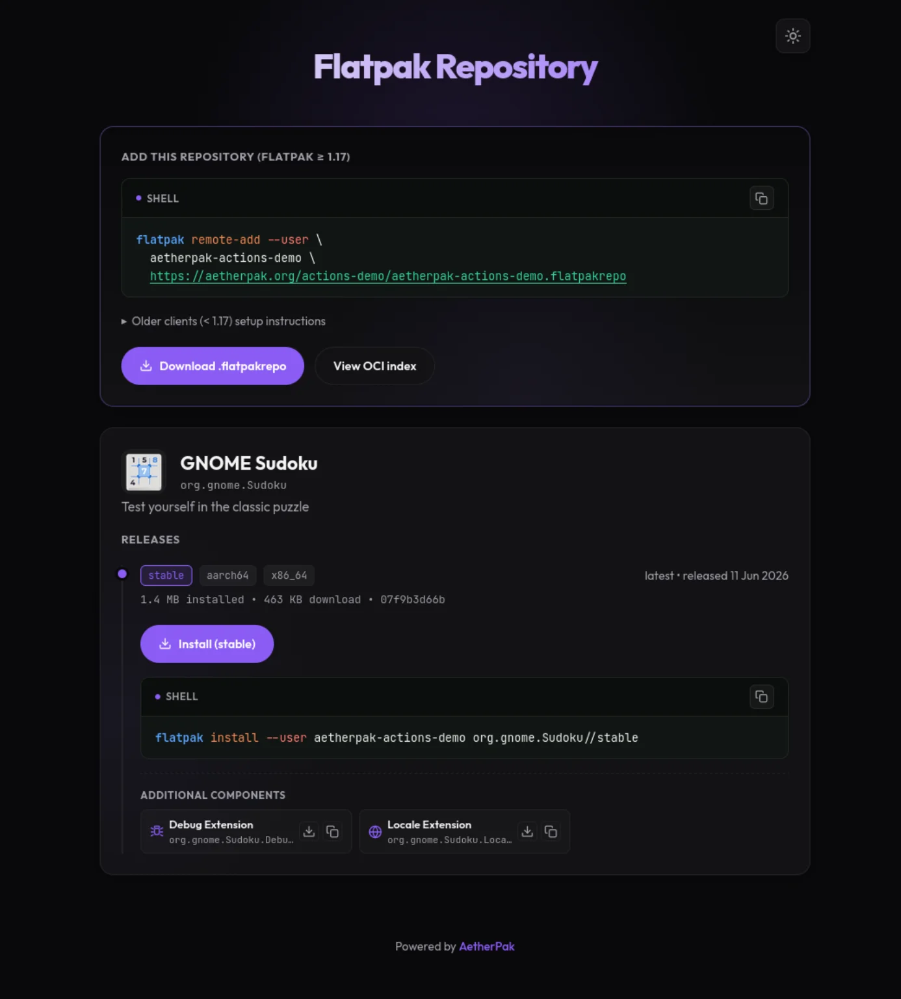

What it is
Serving a static OSTree repository from a simple web server or static host involves transferring hundreds of small, separate file objects. This results in slow client-side installations and trips provider request limits. AetherPak addresses this with a flexible, hybrid OCI-static hosting model:
- Static Control Plane: Host the lightweight JSON repository index, landing installer pages, signing keys, and
.flatpakrefconfigurations on any static web host (GitHub Pages, GitLab Pages, Netlify, Cloudflare Pages, S3, or self-hosted HTTP). - OCI Data Plane: Host the compiled Flatpak binary layers (blobs) as standard container images on any OCI-compliant registry (GitHub Container Registry (GHCR), Docker Hub, Quay.io, or self-hosted registries).
- GPG signing: Support for GPG-signed repositories to authenticate binaries (compatible with Flatpak client versions 1.17+).
- App Stream & Catalog Integration: Generates and exposes full app metadata so that once your repository is added, users can easily discover, install, and update your apps directly from Linux software catalogs like GNOME Software and KDE Discover.
What your users get
Every repository gets a landing page like this, with a one-click .flatpakref install button and copy-paste commands for each app and channel.

Core Projects
Quick Start
To publish a Flatpak application automatically on push, create .github/workflows/publish.yml in your repository:
name: Publish Flatpak
on: { push: { branches: [main] } }
permissions:
contents: read
packages: write
pages: write
id-token: write
jobs:
publish:
uses: aetherpak/actions/.github/workflows/publish.yml@v3
with:
manifest-path: org.example.App.json
secrets:
gpg-private-key: ${{ secrets.AETHERPAK_GPG_KEY }}AetherPak CLI compiles manifests, pushes layers, and builds indexes. Run a release flow locally or in any CI runner:
# Run a complete build, push, and site reconcile sequence
aetherpak release --base-sha HEAD~1
# Re-build static landing pages and indexes from GHCR state
aetherpak build-site --pages-url https://flatpak.example.com